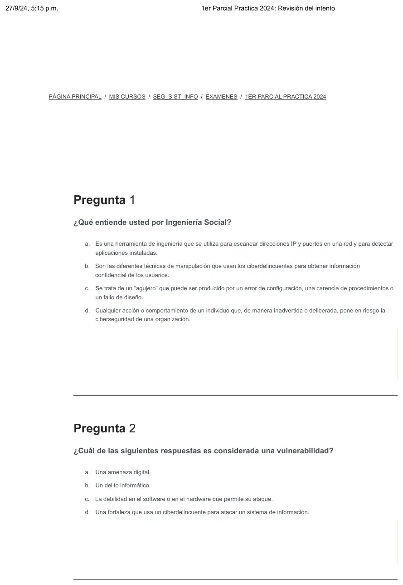
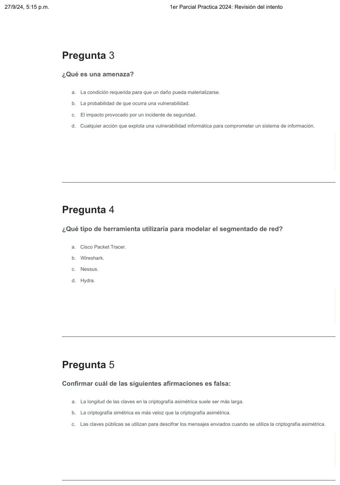
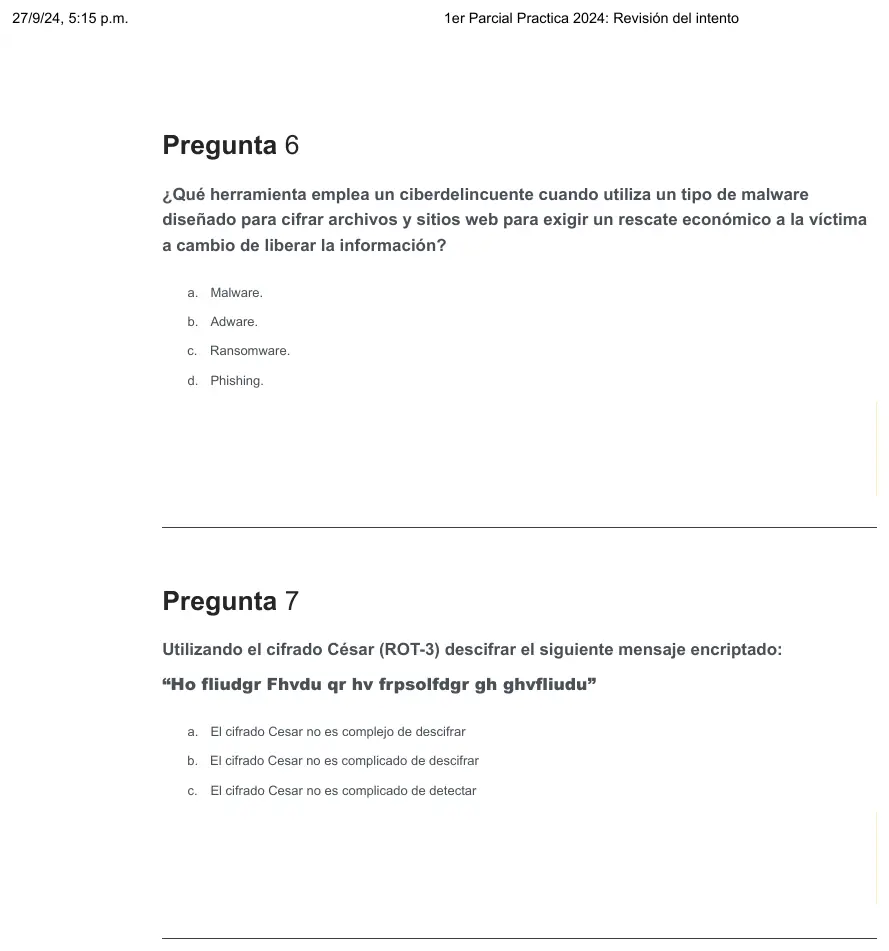
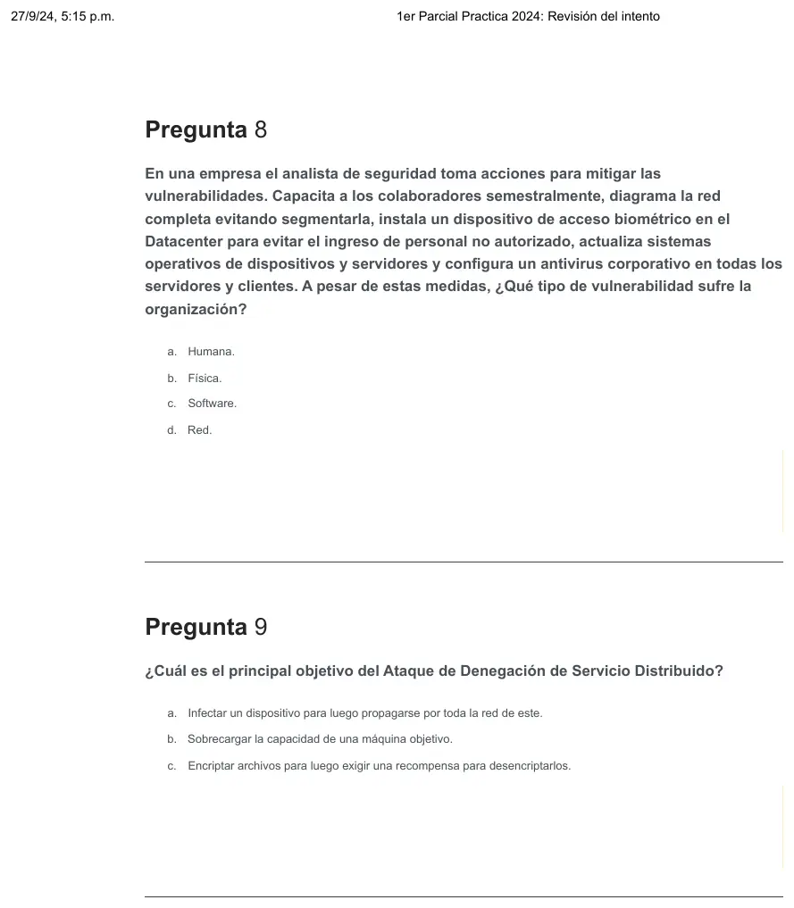
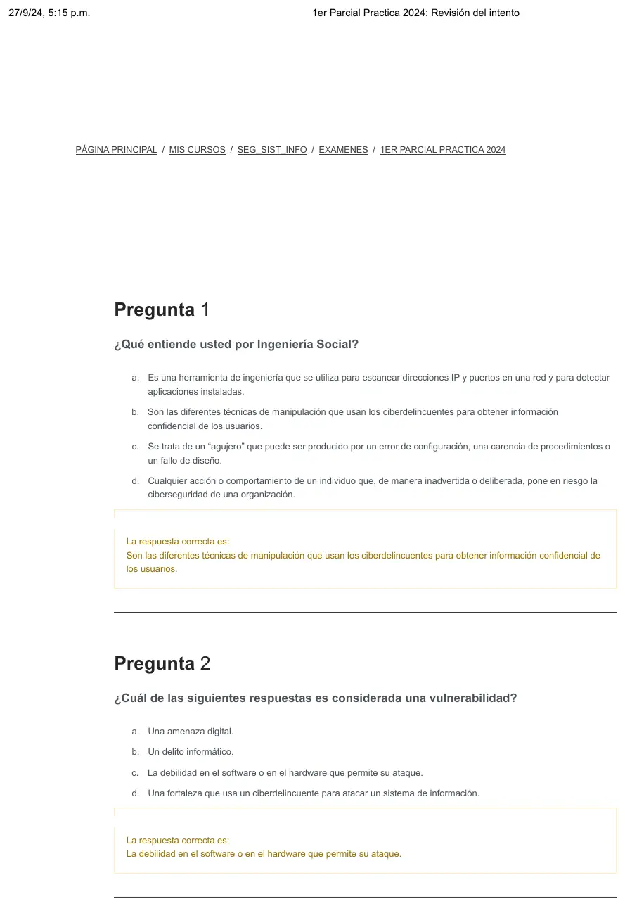
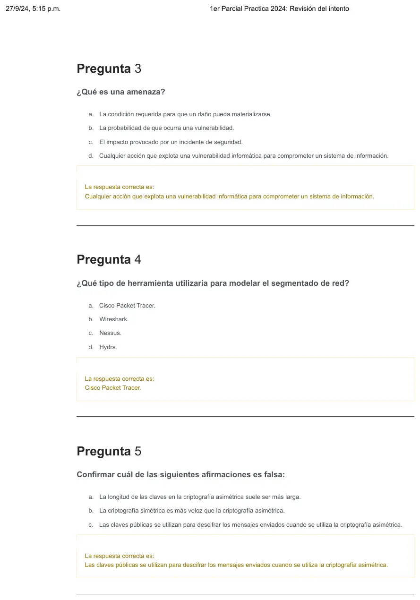
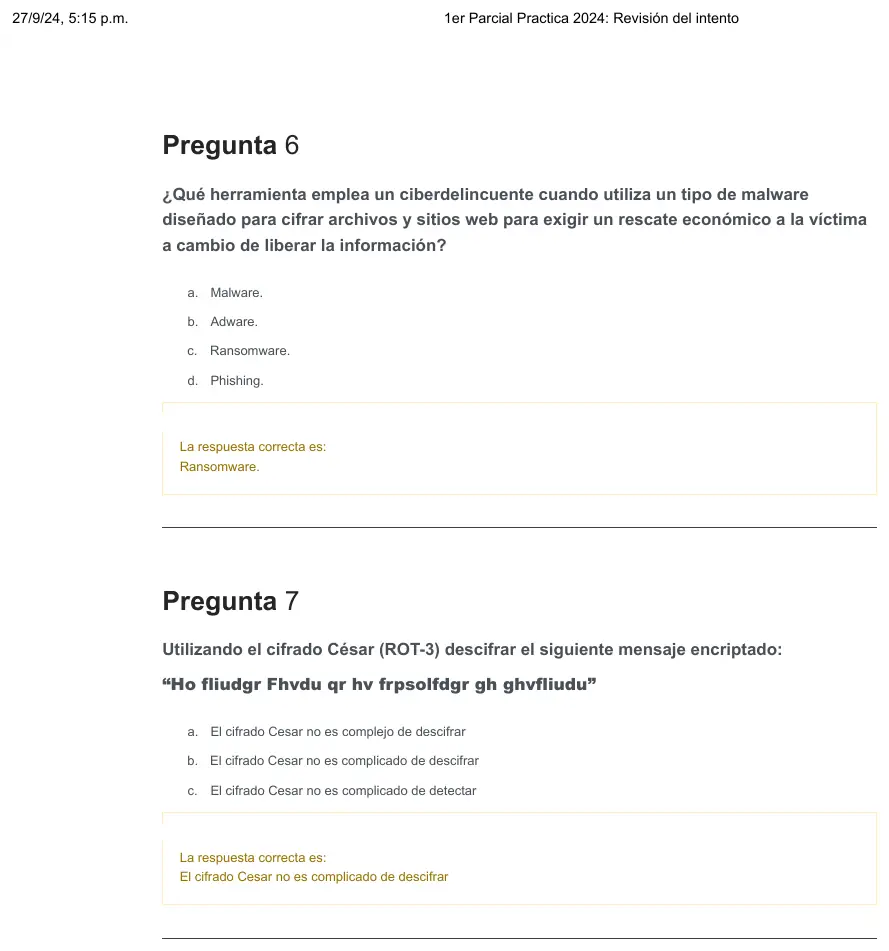
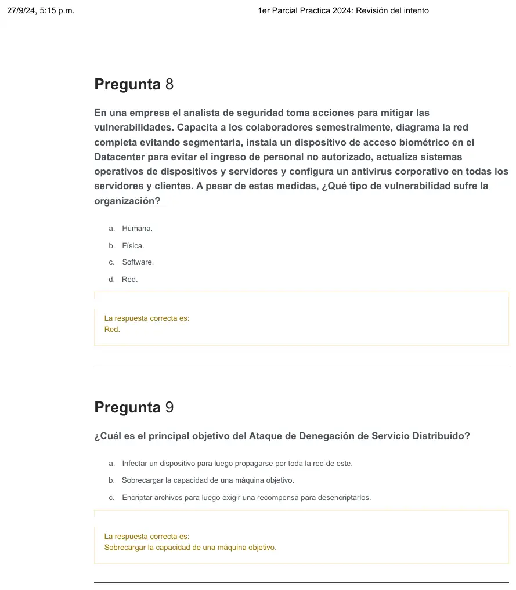

1° parcial práctica, 27/09/2024, preguntas 1 a 9
1° parcial, 27/09/2024
Enunciado








Preguntas con opciones
Salen de este examen. Dejalas para el final, porque las opciones pueden dar pistas.
- 1
¿Cuál de las siguientes respuestas es considerada una vulnerabilidad?
Se tomó: 1° parcial práctica, 27/09/2024
El campus marca la debilidad en el software o en el hardware que permite su ataque.
- 2
¿Qué es una amenaza?
Se tomó: 1° parcial práctica, 27/09/2024
El campus marca cualquier acción que explota una vulnerabilidad para comprometer un sistema de información.
- 3
Confirmar cuál de las siguientes afirmaciones es falsa:
Se tomó: 1° parcial práctica, 27/09/2024
La falsa es la de las claves públicas para descifrar. Las otras dos son verdaderas.
- 4
Confirmar el modo de trabajo de la criptografía asimétrica:
Se tomó: 1° parcial práctica, 27/09/2024
Se encripta con la pública del receptor y se desencripta con la privada del receptor.
- 5
Cuáles son los algoritmos de cifrado simétrico que son más utilizados:
Se tomó: 1° parcial práctica, 27/09/2024
El campus marca AES, DES y 3DES.
- 6
¿Qué tipo de política de lista de control de acceso (ACL) se considera más segura y eficiente para configurar en un firewall?
Se tomó: 1° parcial práctica, 27/09/2024
El campus marca denegar por defecto.
- 7
¿Qué considera que es una DMZ?
Se tomó: 1° parcial práctica, 27/09/2024
La DMZ es la subred que expone los servicios externos a una red no confiable.
- 8
Una sucursal de una empresa se conecta mediante VPN a la casa central. ¿Qué tipo de VPN utiliza?
Se tomó: 1° parcial práctica, 27/09/2024
El campus marca VPN de sitio a sitio.
Resolución
Ver la resolución: La corrección automática del campus de cada pregunta. Lo que marcó el alumno está tapado.
Es la corrección automática del campus o del aula virtual. Son las hojas originales. Tocá una para verla en grande.








¿Cómo te fue?
Marcá cada tema del examen. Las preguntas con opciones ya se corrigieron solas.
- Ingeniería socialVulnerabilidad, amenaza e ingeniería social, en 1° parcial
- Vulnerabilidad y amenazaVulnerabilidades, amenazas y ataques, en 2° parcial
- CriptografíaCriptografía, en 1° parcial
- MalwareMalware y ataques, en 1° parcial
- DDoSMalware y ataques, en 1° parcial